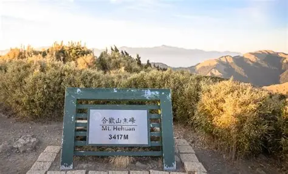

高級挑戰
合歡主峰｜漫步三千公尺高山草原

合歡主峰位於南投縣仁愛鄉， 海拔約 3,417 公尺，是台灣著名的百岳之一。 沿途可欣賞開闊的高山草原、 層層山巒與壯麗雲海。 相較於其他高山路線， 合歡主峰步道較為平緩， 是體驗台灣高山景觀的熱門路線。
登山路線資訊
- 地點：南投縣仁愛鄉
- 海拔：約 3,417 公尺
- 分類：台灣百岳
- 難度：步道較容易，但仍屬高海拔環境
- 常見路線：合歡主峰步道登山口往返
- 路線特色：高山草原、開闊山景、軍事遺跡
- 建議對象：具備基本步行能力，並留意高山適應的登山者
登山裝備建議
建議穿著防滑鞋款， 攜帶防風外套、保暖衣物、雨具、 飲水、行動糧及防曬用品。 高山日照強烈，且天氣變化快速， 即使夏季也應準備保暖衣物。
高山安全注意事項
合歡主峰雖然步道相對容易， 但海拔超過三千公尺， 仍可能出現急性高山症。 若出現頭痛、噁心、頭暈等症狀， 應停止上升並評估撤退。 如症狀惡化，應儘速下降並尋求協助。
冬季可能有積雪與結冰， 出發前應確認天氣、道路管制、 步道開放狀態及裝備需求。